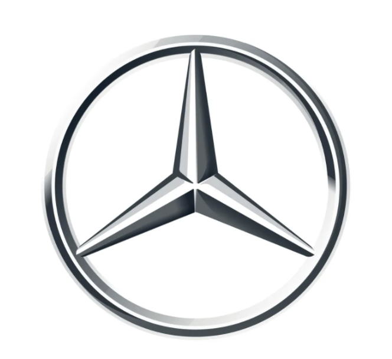
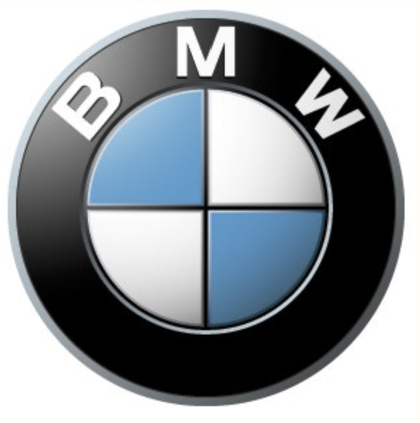
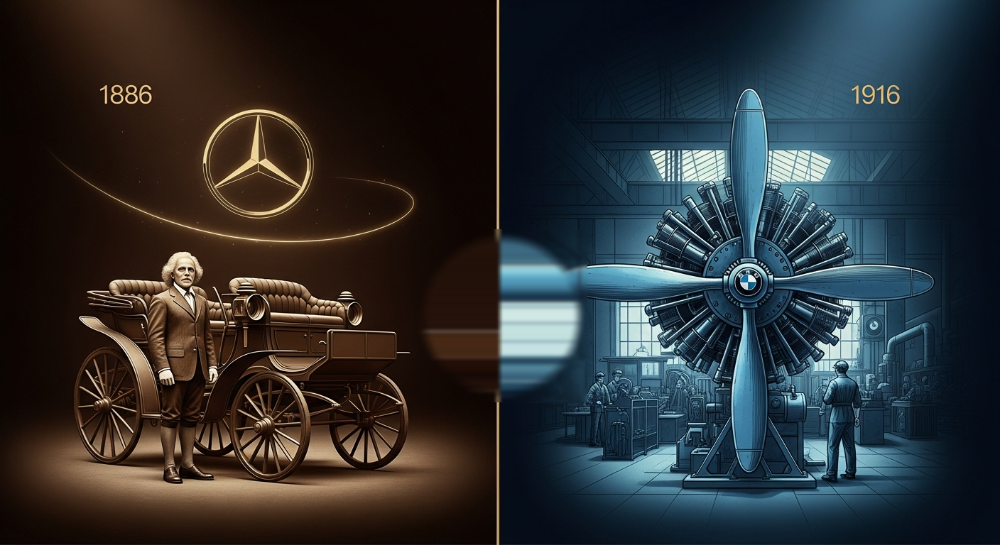
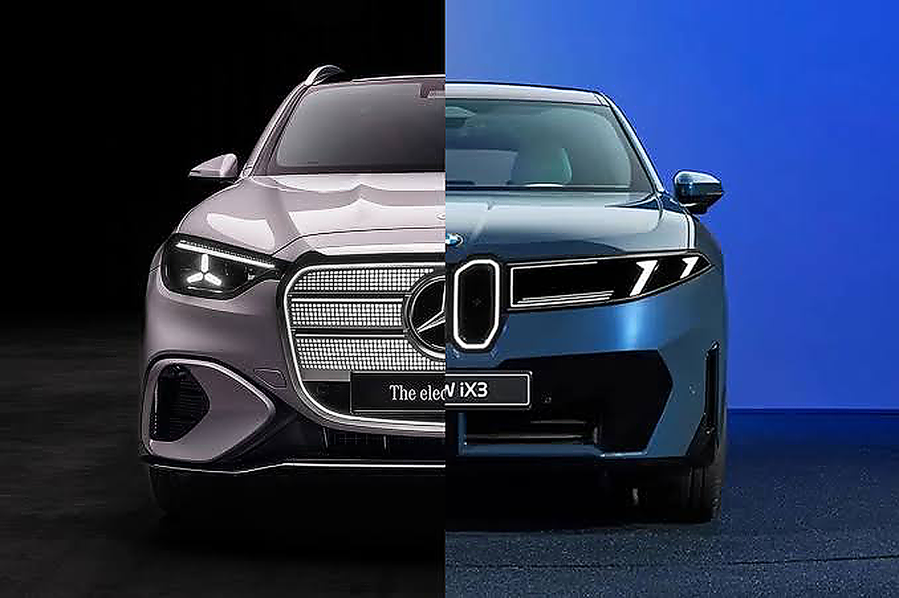
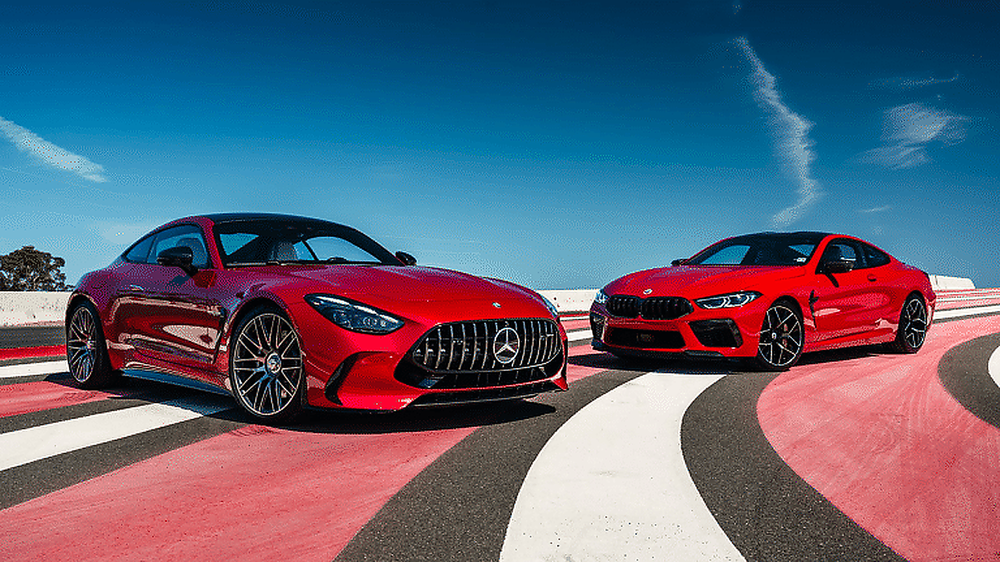

VS
Mercedes-Benz vs BMW · Premium Brand Battle
프리미엄 자동차 브랜드 심층 비교
같은 럭셔리, 다른 철학



| 세그먼트 | Mercedes-Benz | BMW | 차이 |
|---|---|---|---|
| 한국 시장 기준가 (2025–2026) | |||
| 컴팩트 세단 | C 200 4MATIC — 약 6,110만원 | 320i — 약 5,550만원 ★ | BMW -560만원 |
| 중형 세단 | E 300 4MATIC — 약 9,530만원 | 530i xDrive — 약 8,720만원 ★ | BMW -810만원 |
| 대형 세단 | S 450 4MATIC — 약 1.75억원 | 740i xDrive — 약 1.47억원 ★ | BMW -2,800만원 |
| 고성능 | AMG E 53 4MATIC+ — 약 1.52억원 ★ | M5 xDrive (PHEV) — 약 2.30억원 | 벤츠 -780만원 |
| 유지보수 비용 (연간 / 10년) | |||
| 연간 유지비 | 약 $908/년 | 약 $968/년 | 벤츠 -$60 |
| 10년 누적 유지비 | 약 $12,630 | 약 $11,000 ★ | BMW -$1,630 |
| 보증 기간 | 3년/10만km | 2년/무제한km + BSI 5년/10만km ★ | BMW 압도적 우위 |
| 5년 감가율 | ~55–65% | ~45–50% ★ | BMW 잔존가치 ↑ |
메르세데스-벤츠는 3년/10만km 기본 보증을 제공하며, 주행거리와 기간 중 먼저 도래하는 조건이 적용됩니다. 럭셔리 브랜드 최고 수준의 서비스 네트워크를 통해 수준 높은 보증 서비스를 받을 수 있습니다.
BMW는 2년/무제한km 기본 보증 외에, BSI(BMW Service Inclusive) 프리미엄을 통해 구입 후 5년 또는 10만km까지 엔진오일 교환, 정기 점검, 소모품 교환을 무상으로 제공합니다. 실질 절감액은 5년 기준 약 150–250만원에 달합니다.
BMW 10년 만에 1위 탈환 · 출처: 한국수입자동차협회 2025
Mercedes-Benz는 "최선이 아니면 아무것도 아니다"는 철학으로 럭셔리, 기술, 안전의 절대적 정점을 추구합니다. 부메스터 사운드, MBUX 슈퍼스크린, Pre-Safe 등에서 누구도 부정할 수 없는 우위를 가집니다.
BMW는 "운전의 즐거움"이라는 철학으로 퍼포먼스, 가치, 전동화에서 앞서 나갑니다. 2025년 한국 수입차 1위 탈환, 글로벌 EV 판매 2.2배 우위, BSI 무상 유지관리가 BMW의 경쟁력입니다.
두 브랜드 모두 세계 최고의 프리미엄 자동차입니다. 결국 선택은 당신이 자동차에서 무엇을 원하는가에 달려 있습니다.